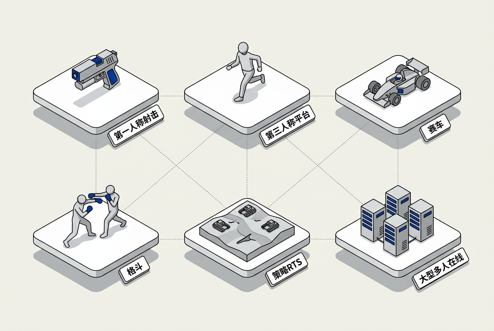

第1章：引言 — 零基础讲义
讲义说明
本讲义基于 Jason Gregory 所著《Game Engine Architecture Volume I》第4版第1章（Introduction, p.1-57），逐节翻译推导，面向零基础读者。
本版插画由 ImageGen + Guizang 材质插画标准流程生成。
学习目标
- 理解"游戏"和"游戏引擎"的概念边界
- 知道不同类型的游戏需要不同技术侧重的引擎
- 了解主流商业引擎（Unreal/Unity）和自研引擎的区别
- 掌握引擎运行时架构的基本分层（Core Systems → Gameplay → Rendering → Platform）
- 建立"工具链 = 引擎的一部分"的认知
1.1 什么是游戏？

1.1.1 游戏的学术定义
1.1.1.1 四个必备要素
Gregory 引用游戏学者 Jesse Schell 的定义，一款"游戏"必须同时具备以下四个要素：
| 要素 | 含义 | 举例 |
|---|---|---|
| 机制（Mechanics） | 游戏规则、运作方式 | "按下A键角色跳跃" |
| 故事（Story） | 事件展开的顺序 | "拯救公主的冒险" |
| 美学（Aesthetics） | 画面、音乐、感觉 | 写实风格 or 像素风 |
| 技术（Technology） | 让前三者能运作的媒介 | 游戏引擎、渲染管线、物理系统 |
1.1.1.2 四要素之间的关系
技术是底层基础：没有技术，机制无法执行，故事无法呈现，美学无法渲染。但技术服务于设计——优秀的引擎隐藏技术的复杂性，让设计师和艺术家专注于机制、故事和美学。
1.1.2 电子游戏的独特性
1.1.2.1 互动性（Interactivity）
电子游戏区别于小说和电影的核心特征是互动性：玩家的输入实时改变虚拟世界的状态。电影是"观看"，游戏是"参与"。
1.1.2.2 实时性（Real-Time）
游戏必须每一帧（通常 16.7ms）完成输入处理→状态更新→画面渲染。任何一个环节超过时间预算就会导致丢帧。
1.1.3 游戏的组成模型
1-1-3-1 对象模型（Object Model）
游戏世界被抽象为一组游戏对象（Game Objects）。每个对象有属性和行为：
- 代理型（Agent-based）： 世界中有多个独立的实体相互交互——敌人、队友、NPC（Non-Player Character，非玩家角色）、道具
- 属性： 位置、旋转、缩放、生命值、速度
- 行为： AI 决策、物理碰撞、动画播放
1-1-3-2 组件模型（Component Model）
单个游戏对象 不是一个"巨大的类"，而是由多个小组件拼起来的。一个敌人可能由这些组件组成：Transform + MeshRenderer + Collider + AIComponent + HealthComponent + AnimationComponent。
// 组件模型的表示（伪代码）
class Enemy {
TransformComponent transform;
MeshComponent mesh;
ColliderComponent collider;
HealthComponent health; // HP = 100
AIComponent ai; // 行为：巡逻/追击/攻击
AnimationComponent anim; // 播放走路/跑步/攻击动画
}
// 每个组件独立运作，通过消息（Event）互相通信
// 比如：collider 检测到子弹 → 发消息给 health → health 减少 HP建议分两个组件——ShieldComponent 和 HealthComponent——因为它们的规则完全不同（护盾会随时间恢复、不同武器对护盾和本体的伤害系数不同）。组件化让每个"职责"独立演化，不互相纠缠。
1.2 什么是游戏引擎？

1.2.1 游戏引擎的定义
1.2.1.1 一个实用定义
Gregory 给出的定义："游戏引擎是一套可扩展的软件框架，它提供游戏开发所需的核心功能，并允许开发者在此基础上构建特定的游戏内容。"
1.2.1.2 引擎 vs 游戏的边界
这条边界是模糊的——同一个代码模块在不同语境下可能属于"引擎"或"游戏"。一般来说：
- 引擎层： 可复用的通用功能（渲染、物理、音频、输入、文件系统）
- 游戏层： 特定于当前游戏的数据和逻辑（角色技能、关卡布局、对话树）
1.2.2 引擎的可复用性光谱
1.2.2.1 从专用到通用的五级光谱
| 级别 | 描述 | 例子 | 复用性 |
|---|---|---|---|
| L1: 无引擎 | 每个游戏从零写 | 1980年代街机游戏 | ★☆☆☆☆ |
| L2: 代码复用 | 从前作复制粘贴代码 | GTA3→GTA Vice City | ★★☆☆☆ |
| L3: 内部引擎 | 公司内部共享引擎 | EA Frostbite、Capcom RE | ★★★☆☆ |
| L4: 授权引擎 | 卖给其他公司的引擎 | Unreal、Unity、CryEngine | ★★★★☆ |
| L5: 通用引擎 | 覆盖所有类型和平台 | Unreal Engine 5（接近） | ★★★★★ |
1.2.2.2 为什么自研引擎还存在？
尽管 Unreal 和 Unity 几乎"能做什么游戏"，自研引擎仍有一席之地：
- 完全控制： 不需要等待 Epic/Unity 修 bug
- 极致优化： 针对特定游戏类型深度优化（如 id Tech 针对 FPS）
- 无授权费： 大厂每年省下数百万美元引擎授权费
- 技术壁垒： 自研引擎本身是竞争优势
1.2.3 引擎的典型边界
1.2.3.1 引擎通常包含什么
- 渲染器（Renderer）——把 3D 数据变成屏幕上的像素
- 物理引擎（Physics）——碰撞检测、刚体动力学
- 音频引擎（Audio）——3D 空间声、混响、动态混合
- 动画系统（Animation）——骨骼动画、动作混合、IK
- AI 系统（AI）——寻路、行为树、感知
- 输入系统（Input）——键盘/鼠标/手柄→游戏动作
- 资源管理（Resource Manager）——加载/卸载/引用计数
- 工具管线（Tool Pipeline）——编辑器、资产导入/导出
1.2.3.2 引擎通常不包含什么
- 具体游戏逻辑（角色技能、关卡目标、数值平衡）
- 具体游戏资源（模型、纹理、音频文件、关卡数据）
- 游戏设计决策（虽然引擎提供基础，但设计是团队的工作）
因为引擎提供的是能力而不是规则。渲染系统不管被渲染的是卡通大头还是写实战士；物理引擎不管碰撞的是方块还是拳头。真正区分游戏类型的是游戏逻辑层的数据和规则——而这一层不在引擎的职责范围内。
1.3 各类型游戏的引擎差异
生活类比： 不同类型的游戏就像不同的运动——篮球鞋和跑鞋都是"鞋"，但篮球鞋强调侧向支撑（横向急停），跑鞋强调缓震（纵向冲击）。同理，FPS 引擎和 RTS 引擎都是"引擎"，但技术侧重点完全不同。

1.3.1 不同类型的技术侧重点
1.3.1.1 第一人称射击（FPS）
| 技术要点 | 为什么重要 |
|---|---|
| 高效渲染大场景 | 玩家视野开阔，可见区域大 |
| 精准的相机控制 | 鼠标灵敏度、加速度映射直接影响手感 |
| 网络预测与延迟补偿 | 多人对战对延迟极其敏感 |
| 高效碰撞检测 | 子弹、爆炸物大量实时碰撞 |
1.3.1.2 第三人称动作冒险（如战神、刺客信条）
| 技术要点 | 为什么重要 |
|---|---|
| 角色动画与 IK | IK（Inverse Kinematics，逆向运动学）让角色脚踩在不同高度地面上自然贴合 |
| 环境交互 | 攀爬、游泳、滑索等丰富交互需要复杂的状态机 |
| 流式加载（Streaming） | 开放世界需要无缝加载远处的地形和建筑 |
1.3.1.3 大型多人在线（MMO）
| 技术要点 | 为什么重要 |
|---|---|
| 服务器架构 | 需要支持数千玩家同时在线 |
| 数据库与持久化 | 角色数据、背包、公会信息需永久保存 |
| 状态同步 | 所有玩家看到的游戏世界必须一致 |
| 反作弊 | 经济系统不允许刷金币 |
1.3.1.4 即时策略（RTS）
| 技术要点 | 为什么重要 |
|---|---|
| 海量单位管理 | 同时移动数千个单位 |
| 高效寻路 | 每个单位都要算最短路径 |
| 视野系统（Fog of War） | 只渲染玩家能看到的部分 |
| 确定性同步 | Lockstep 锁步网络模型 |
1.3.1.5 体育/竞速游戏
| 技术要点 | 为什么重要 |
|---|---|
| 高精度物理模拟 | 球的旋转、车的悬挂反馈必须真实 |
| 高帧率要求 | 竞速游戏通常要求 60fps 最低 |
| 音效同步 | 引擎声、碰撞声必须与物理精确对应 |
1.3.1.6 格斗游戏
| 技术要点 | 为什么重要 |
|---|---|
| 精确帧判定 | 某些招式窗口只有 1-3 帧 |
| 输入缓冲 | 允许提前输入必杀技 |
| 网络回滚（Rollback Netcode） | 格斗游戏延迟不可接受 |
1.3.2 室内 vs 室外引擎的技术取舍
1.3.2.1 两种根本不同的渲染策略
Gregory 用一个经典对比说明：同一个引擎不能同时最优处理室内和室外：
| 室内引擎（如 DOOM 3） | 室外引擎（如 上古卷轴） | |
|---|---|---|
| 可见性判断 | BSP 树（Binary Space Partitioning，二元空间分割树——把空间切成小块，被墙挡住的部分不渲染）或 Portal 系统 | LOD（Level-of-Detail，细节层次——远处物体用低精度模型）+ 视锥剔除 |
| 光照 | 大量动态点光源、阴影投射 | 大量平行光（太阳）、预计算光照 |
| 几何复杂度 | 中等（一房间几千面） | 极高（一视野几十万面就需LOD） |
1.3.2.2 混合场景的挑战
现代 3A 游戏几乎都是混合场景——既有室内（地牢/建筑内）也有室外（开放世界）。处理这种过渡是现代引擎的重大挑战。Unreal 5 的 Nanite（虚拟化几何体）部分解决了这个问题——几何复杂度不再限制引擎选择。
1.3.3 VR/AR/MR 的特殊要求
1.3.3.1 VR（虚拟现实）的极端要求
- 极高帧率： 最低 72fps，推荐 90fps+（每帧 11ms）
- 极低延迟： "头部旋转→画面更新"必须 < 20ms，否则玩家会晕
- 立体渲染： 每帧渲染两个画面（左右眼），GPU 负载翻倍
- 追踪系统： 6DOF 头部+手柄追踪精度要求毫米级
- TimeWarp/SpaceWarp： 在帧渲染完成后根据最新头部姿态扭曲画面，将感知延迟降到 1ms
1.3.3.2 AR/MR 的额外挑战
AR（Augmented Reality，增强现实）和 MR（Mixed Reality，混合现实）还需要：实时环境理解（平面检测、深度感知）、虚拟物体与真实环境的光照一致性。
网络层（FPS用客户端预测、RTS用Lockstep）、物理精度（FPS好精度普通、RTS可降低保性能）、渲染策略（FPS近景高精度/RTS远景大量单位）、摄像机系统（FPS第一人称/RTS俯视自由视角）。核心渲染器和文件系统可以共通。
1.4 游戏引擎生态
1.4.1 主流商业引擎
1.4.1.1 Unreal Engine（Epic Games）
- 语言： C++（引擎核心）+ Blueprint（可视化脚本）
- 授权模式： 收入超过100万美元后收取5%版税
- 强项： 顶级画质、开放世界、Nanite/Lumen、完整工具链
- 知名作品： 堡垒之夜、黑神话：悟空、最终幻想7重制版
1.4.1.2 Unity（Unity Technologies）
- 语言： C#（游戏逻辑）+ C++（引擎底层）
- 授权模式： 多级订阅制（个人免费/Pro/Enterprise）
- 强项： 跨平台极其广泛（25+平台）、上手快、2D 支持出色
- 知名作品： 原神、空洞骑士、Cities: Skylines
1.4.1.3 Godot（开源）
- 语言： GDScript（类Python）+ C# + C++
- 授权模式： 完全免费开源（MIT License）
- 强项： 轻量、零授权费、社区驱动
1.4.2 大厂自研引擎
- EA Frostbite： 战地系列、FIFA（已停产自研部分）
- Capcom RE Engine： 生化危机、怪物猎人
- CD Projekt REDengine： 巫师3、赛博朋克2077（已转向UE5）
- Rockstar RAGE： GTA V、荒野大镖客2
- id Tech： DOOM Eternal（FPS 优化极致）
1.4.3 选择引擎的核心因素
1.4.3.1 六个关键决策维度
| 维度 | 旗舰引擎(UE/Unity) | 自研引擎 |
|---|---|---|
| 开发速度 | 快（已有完整工具链） | 慢（先造工具） |
| 技术控制 | 受制于开发商路线图 | 完全自主 |
| 人才获取 | 容易（市场上有经验者多） | 困难（需要内部培训） |
| 授权费用 | 版税/订阅 | 无版税（但有人力成本） |
| 性能上限 | 通用优化 | 可针对特定游戏极致优化 |
| 技术负债 | 引擎更新可能破坏项目 | 自行决定升级节奏 |
1.5 引擎运行时架构
1.5.1 引擎的分层结构
1.5.1.1 经典五层架构（自底向上）
| 层 | 职责 | 例子 |
|---|---|---|
| 平台层 | 操作系统抽象、硬件访问 | 文件IO、线程、网络、GPU |
| 核心系统 | 引擎基础模块 | 内存分配器、数学库、容器、字符串ID |
| 资源层 | 资源管理 | 资源加载/卸载、异步IO、包文件 |
| 功能层 | 各子系统 | 渲染、物理、音频、动画、AI |
| 游戏层 | 具体游戏逻辑 | 角色、技能、关卡、UI |
1.5.1.2 层间依赖规则
严格从上到下依赖：游戏层依赖功能层，功能层依赖核心系统，核心系统依赖平台层。绝不允许反向依赖——渲染器不应该知道"玩家"的存在。
1.5.2 各子系统详解
1.5.2.1 渲染器（Renderer）
将 3D 场景转化为屏幕像素。涉及：视锥剔除、LOD 选择、绘制调用提交、着色器执行、后处理（抗锯齿/运动模糊/HDR）。这是引擎中代码量最大、性能要求最高的子系统。
1.5.2.2 物理引擎（Physics）
模拟真实世界中的碰撞和运动。包括：刚体动力学（F=ma）、碰撞检测（Broad Phase → Narrow Phase）、约束求解（关节/铰链/弹簧）、射线检测。常用方案：集成第三方物理库（PhysX/Havok/Bullet）。
1.5.2.3 音频引擎（Audio）
管理音效的播放、混合、空间化。包括：3D 定位（离声源距离→音量衰减）、环境效果（混响/遮挡）、动态混合（音乐+音效+语音的实时音量平衡）。常用方案：Wwise/FMOD。
1.5.2.4 前端/UI（Front-End）
用户界面系统：HUD（Heads-Up Display，平视显示器——血条/弹药/小地图）、菜单、过场动画、游戏状态管理（主菜单→加载→游戏中→暂停→结束）。
UI 是"2D叠加层"，需要精确的像素对齐和事件响应（点击按钮）。3D 渲染是透视投影的空间变换。混合处理会让 UI 画质受损（如抗锯齿撕裂UI文字），也会让 UI 事件的"点击了哪个按钮"的拾取变复杂。分开处理让两者各得其所。
1.5.3 游戏循环（Game Loop）
1.5.3.1 主循环的基本结构
// 简化的游戏主循环
while (gameRunning) {
ProcessInput(); // 1. 收集输入
UpdateGameLogic(dt); // 2. 更新游戏状态
RenderFrame(); // 3. 渲染画面
SwapBuffers(); // 4. 交换前后缓冲区（显示到屏幕）
}1.5.3.2 帧率与时间步长
时间步长 dt（delta time）是"上一帧到这一帧过去了多少秒"，用来保证游戏速度与帧率解耦——60fps 和 30fps 时角色移动速度一样快。
// 使用 deltaTime 解耦帧率和游戏速度
void Update(float dt) {
position += velocity * dt; // 角色移动
timer -= dt; // 冷却倒计时
animState += dt * animSpeed; // 动画进度
}
// 这样：无论 dt=0.016（60fps）还是 dt=0.033（30fps）——角色每秒移动的速度都是一样的1.6 工具与资产管线
1.6.1 工具链 = 引擎的重要组成
1.6.1.1 Gregory 的核心观点
引擎不是只有运行时代码。一套完整的游戏引擎至少包含：
- 运行时（Runtime）： 玩家机器上运行的可执行文件
- 工具（Tools）： 编辑器、资产导入器、构建工具
- 管线（Pipeline）： 资产从 DCC（Digital Content Creation，数字内容创作工具，如 Maya/Blender/Photoshop）到引擎的完整流程
1.6.1.2 资产管线流程图
// 典型 3D 模型资产管线
Maya/Blender 导出 .fbx
↓
引擎的 Asset Importer 解析 .fbx
↓
Cook/Build 处理（压缩、LOD 生成、碰撞体生成）
↓
运行时加载为 GameObject（含 Mesh + Material + Collider）1.6.2 典型开发工具
1.6.2.1 关卡编辑器（Level Editor）
这是设计师最常使用的工具。允许拖拽放置模型、调整光照、绘制地形、设置触发区域。"做游戏"的过程在相当程度上就是"在编辑器里摆关卡"的过程。
1.6.2.2 资产浏览器（Asset Browser）
管理游戏中的所有数字资产：纹理、模型、音频、动画、字体。支持搜索、标签、缩略图预览、依赖关系查看。
1.6.2.3 脚本编辑器
允许设计师编写游戏逻辑（如 Blueprint、Lua）。可视化脚本（Blueprint）极大地降低了编程门槛——拖线连接节点就能实现逻辑。
1.6.2.4 Profiler & 调试工具
引擎内置的性能分析和调试工具。见第10章的详细讲解。
1.7 全章总结
这一章建立了游戏引擎的宏观概念地图：
- 游戏 = 机制+故事+美学+技术，技术是底层支撑
- 游戏引擎是可复用的软件框架，边界在"通用能力"和"特定逻辑"之间
- 不同类型游戏需要不同的技术侧重点（"没有万能引擎"是原书核心观点之一）
- 主流选择：商业引擎（UE/Unity）降本增效，自研引擎提供极致控制权
- 引擎分层架构（平台→核心→资源→功能→游戏）是设计和理解引擎的基石
- 工具链不是引擎的附属品——它就是引擎的一部分
本章核心洞察
游戏引擎有一个根本矛盾：越通用，越不高效；越专用，越不灵活。一个"能做所有类型游戏"的引擎必然带着大量你用不到的代码——这就是 Unreal 安装包 30GB+ 的原因。而一个针对你的游戏极致优化的自研引擎，可能在另一个类型上表现糟糕。理解这个矛盾，就理解了整个游戏引擎行业的生态格局。
三条入门准则：
1. 先理解架构，再深入细节： 知道"每个系统在五层架构的哪里"比知道"某个 API 怎么调用"重要得多
2. 引擎是基础设施： 从项目第1天就开始构建日志/Profiler/编辑器——不是"做完游戏再加"
3. One Engine Does NOT Fit All： Gregory 在书中不断强调——没有完美的引擎，只有适合你项目的引擎
📝 课后练习题（含答案）
游戏引擎是可复用的软件框架，提供渲染/物理/音频/输入/资源管理等通用功能。解决的问题：① 避免每款游戏从零写渲染器 ② 让团队关注游戏内容而非底层技术 ③ 跨平台（一次开发多平台发布） ④ 提供工具链（编辑器/资产管线）让非程序员也能参与开发。
覆盖： 技术（全量覆盖——渲染/物理/音频/输入/文件系统/工具链）
提供基础但不覆盖： 机制（提供组件模型/脚本系统但不规定"你的游戏怎么玩"）、美学（提供渲染能力但不规定"你的画面长什么样"）、故事（提供过场动画工具但不规定"剧情是什么"）。
L1无引擎→L2代码复用→L3内部引擎→L4授权引擎→L5通用引擎。现代 3A 游戏分布：约 60% 用 UE5（L4-L5），约 30% 用自研引擎（L3），约 10% 用 Unity（L4）。大厂（EA/Rockstar/Capcom）仍坚持 L3 自研。
① 渲染策略： FPS 近景高精度（单个敌人几百面）+材质细节/RTS 远景大量单位（数千单位同屏）→用 instance 渲染+LOD。② 网络模型： FPS 用客户端预测（低延迟体验）/RTS 用 Lockstep 锁步（完全同步）。③ 物理模拟： FPS 高精度（子弹轨迹）/RTS 简化（兵种碰撞用简单圆形）。④ AI 规模： FPS 几个敌人→精细行为树/RTS 数百单位→简化的群体AI。
从底向上：平台层→核心系统→资源层→功能层→游戏层。不能反向依赖的原因：如果渲染器（功能层）依赖"玩家"（游戏层），那么换成另一个游戏（没有"玩家"，只有"赛车"）时渲染器就崩溃了。引擎应该是通用平台，不知道也不应该知道上面跑的是什么游戏。
因为工具和运行时共享同一套数据结构和资源格式。关卡编辑器保存的文件格式 = 引擎加载时读取的格式。如果编辑器"不理解引擎"，导出的格式必然有损或需要转换——费时且易出错。好的引擎让"编辑器里看到的就是游戏里得到的"（WYSIWYG，所见即所得）。
BSP（Binary Space Partitioning）树： 把空间递归切成两半，建立"哪些面在哪些空间块中"的数据库。适用于室内——被墙挡住的房间不渲染。LOD（Level of Detail）： 远处的物体用低面数模型替换。适用于室外——远处的一座山可能只用 50 个三角形。区别：BSP 解决"看不见的不渲染"，LOD 解决"看得见但看不清的简化渲染"。
因为人类前庭系统（内耳平衡器官）和视觉系统是紧密耦合的。当你转头但画面更新延迟超过 20ms，眼睛说"转了"但内耳说"没转"→大脑判断为"中毒了"→触发呕吐反射。这就是晕动症（Motion Sickness）。传统屏幕视野占比小，延迟会被大脑解释为"外面世界卡了一下"——不会触发呕吐反射。
🤖 qAagent 零基础问答区
三条路：① 学 Unreal： 下载 UE5，跟着官方教程做一个简单游戏（2-3天入门）。用 Blueprint 不用写 C++。② 学 Unity： 下载 Unity，更轻量，C# 易上手。③ 读这本书： Game Engine Architecture——不教你做游戏，但告诉你引擎是怎么设计的。建议先①/②感受"引擎能做什么"，再③理解"引擎是怎么做到的"。
选 UE5： 追求顶级画质、做 3A 级 3D 游戏、想进大厂（Epic/EA/CDPR 等都用 UE）。代价：学习曲线陡、硬件要求高。 选 Unity： 快速原型、2D 游戏、移动端游戏、小团队。C# 比 C++ 友好太多。2023 的定价风波后社区受伤但仍是最大独立开发平台。简单规则：想进 AAA 行业用 UE，想快速做游戏用 Unity。
没有硬边界，但有一个实用的检测标准："删掉当前游戏的数据和逻辑，剩下的代码还能给另一个游戏用吗？"能用的→引擎。不能用的→游戏层。比如：渲染器（能）→引擎。玩家技能系统（不能，只适用于这个游戏）→游戏层。关卡数据（不能）→游戏资源。关卡编辑器（能）→引擎工具。
四个核心原因：① 完全控制： 引擎源码在手，想改什么改什么。UE 虽然开源但你提交的改动不一定被 Epic 合并。② 极致性能： 针对自家游戏深度优化——id Tech 的 FPS 性能远超 UE 做同类型。③ 技术壁垒： RAGE 引擎的开放世界流式加载是 Rockstar 的核心竞争力。④ 历史投资： 已经投入数千人年的自研引擎，切换成本太高（重新培训所有人、迁移所有资产和工具）。
GameObject 是容器，Component 是功能块。类比：一个人（GameObject）有大脑（AI Component）、心脏（Health Component）、骨骼（Animation Component）、皮肤（Mesh Component）。单独一个空的 GameObject 什么都做不了。添加 Transform Component → 有了位置；添加 Mesh Component → 有了外观；添加 Collider → 能碰撞。这就是"组合优于继承"的设计——不需要一个庞大的"Enemy 类"继承自"Character 类"继承自"Entity 类"。只需往空容器里加组件就行。
平台层是一层抽象——把所有操作系统差异封装掉。上层代码调用 FileSystem::Open("data.bin") 而不知道底层是 Windows 的 CreateFileW 还是 PS5 的 sceKernelOpen。典型的平台层模块：文件IO、线程创建/管理、网络Socket、GPU 命令提交（DX12/Vulkan/Metal 的选择）、内存分配（系统 malloc 或控制台专用 API）、时间/计时器。这层的存在意义：加一个新平台只需实现这层，上层所有代码不变。
如果能写基本的 C++（类/继承/虚函数/指针/引用），就能读。书中用到 3D 数学（向量/矩阵/四元数），但 Gregory 在第5章从头讲起。不需要：① 学过计算机图形学 ② 做过游戏 ③ 掌握汇编。需要的唯一习惯：不怕长——这本书 1000+ 页，读它像读百科全书而不是小说。每章独立，按需查阅。
三个核心认知：
1. 引擎 = 通用平台，游戏 = 特定内容——这个边界贯穿全书。
2. 没有万能引擎——每种引擎都是针对特定类型的技术选择。
3. 工具链不是引擎的附带品——关卡编辑器、资产导入器、Profiler 和运行时一样重要。理解这三条，后面的章节就是不断展开这些概念的具体技术细节。
- 学习目标
- 学习目标
- 1.1 什么是游戏？
- 1.1.1 游戏的学术定义
- 1.1.1.1 四个必备要素
- 1.1.1.2 四要素之间的关系
- 1.1.2 电子游戏的独特性
- 1.1.2.1 互动性（Interactivity）
- 1.1.2.2 实时性（Real-Time）
- 1.1.3 游戏的组成模型
- 1-1-3-1 对象模型（Object Model）
- 1-1-3-2 组件模型（Component Model）
- 1.2 什么是游戏引擎？
- 1.2.1 游戏引擎的定义
- 1.2.1.1 一个实用定义
- 1.2.1.2 引擎 vs 游戏的边界
- 1.2.2 引擎的可复用性光谱
- 1.2.2.1 从专用到通用的五级光谱
- 1.2.2.2 为什么自研引擎还存在？
- 1.2.3 引擎的典型边界
- 1.2.3.1 引擎通常包含什么
- 1.2.3.2 引擎通常不包含什么
- 1.3 各类型游戏的引擎差异
- 1.3.1 不同类型的技术侧重点
- 1.3.1.1 第一人称射击（FPS）
- 1.3.1.2 第三人称动作冒险（如战神、刺客信条）
- 1.3.1.3 大型多人在线（MMO）
- 1.3.1.4 即时策略（RTS）
- 1.3.1.5 体育/竞速游戏
- 1.3.1.6 格斗游戏
- 1.3.2 室内 vs 室外引擎的技术取舍
- 1.3.2.1 两种根本不同的渲染策略
- 1.3.2.2 混合场景的挑战
- 1.3.3 VR/AR/MR 的特殊要求
- 1.3.3.1 VR（虚拟现实）的极端要求
- 1.3.3.2 AR/MR 的额外挑战
- 1.4 游戏引擎生态
- 1.4.1 主流商业引擎
- 1.4.1.1 Unreal Engine（Epic Games）
- 1.4.1.2 Unity（Unity Technologies）
- 1.4.1.3 Godot（开源）
- 1.4.2 大厂自研引擎
- 1.4.3 选择引擎的核心因素
- 1.4.3.1 六个关键决策维度
- 1.5 引擎运行时架构
- 1.5.1 引擎的分层结构
- 1.5.1.1 经典五层架构（自底向上）
- 1.5.1.2 层间依赖规则
- 1.5.2 各子系统详解
- 1.5.2.1 渲染器（Renderer）
- 1.5.2.2 物理引擎（Physics）
- 1.5.2.3 音频引擎（Audio）
- 1.5.2.4 前端/UI（Front-End）
- 1.5.3 游戏循环（Game Loop）
- 1.5.3.1 主循环的基本结构
- 1.5.3.2 帧率与时间步长
- 1.6 工具与资产管线
- 1.6.1 工具链 = 引擎的重要组成
- 1.6.1.1 Gregory 的核心观点
- 1.6.1.2 资产管线流程图
- 1.6.2 典型开发工具
- 1.6.2.1 关卡编辑器（Level Editor）
- 1.6.2.2 资产浏览器（Asset Browser）
- 1.6.2.3 脚本编辑器
- 1.6.2.4 Profiler & 调试工具
- 1.7 全章总结
- 本章核心洞察
- 📝 课后练习题（含答案）
- 🤖 qAagent 零基础问答区